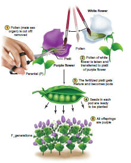
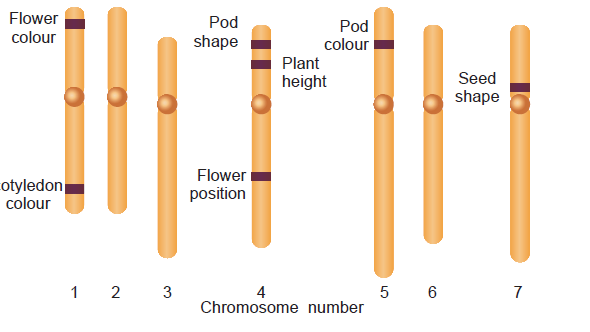
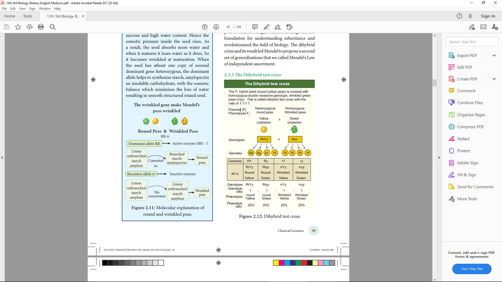
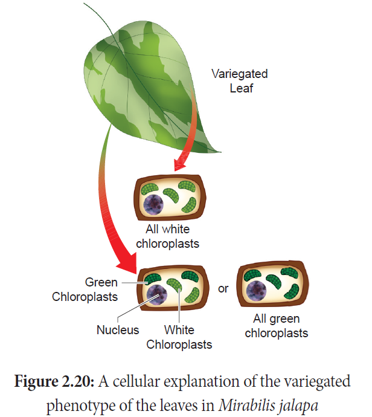

2.1 Heredity and Variation
2.2 Mendelism
2.3 Monohybrid, Dihybrid, cross, Backcross and Testcross
2.4 Interaction of Genes
2.5 Polygenic inheritance in Wheat kernel colour, Pleiotropy – Pisum sativum
2.6Extra chromosomal inheritance- Cytoplasmic inheritance in Chloroplast.
2.7 Atavism
Genetics is the study of how living things receive common traits from previous generations. No field of science has changed the world more, in the past 50 years than genetics. The scientific and technological advances in genetics have transformed agriculture, medicine and forensic science etc.
Genetics – The Science of heredity OPEN BRACKET Inheritance CLOSE BRACKET - “Genetics” is the branch of biological science which deals with the mechanism of transmission of characters from parents to offsprings. The term Genetics was introduced by W. Bateson in 1906.
The four major subdisciplines of genetics are
1. Transmission Genetics SLASH Classical Genetics – Deals with the transmission of genes from parents to offsprings. The foundation of classical genetics came from the study of hereditary behaviour of seven genes by Gregor Mendel.
2. Molecular Genetics – Deals with the structure and function of a gene at molecular level.
3. Population Genetics – Deals with heredity in groups of individuals for traits which is determined by a few genes.
4. Quantitative Genetics – Deals with heredity of traits in groups of individuals where the traits are governed by many genes simultaneously.
What is the reason for similarities, differences of appearance and skipping of generations QUESTION MARK
Genes – Functional Units of inheritance: The basic unit of heredity OPEN BRACKET biological information CLOSE BRACKET which transmits biochemical, anatomical and behavioural traits from parents to offsprings.
Genetics is often described as a science which deals with heredity and variation.
Heredity is the transmission of characters from parents to offsprings.
The organisms belonging to the same natural population or species that shows a difference in the characteristics is called variation. Variation is of two types OPEN BRACKET 1 CLOSE BRACKET Discontinuous variation and OPEN BRACKET 2 CLOSE BRACKET Continuous variation
Within a population there are some characteristics which show a limited form of variation. Example: Style length in Primula, plant height of garden pea. In discontinuous variation, the characteristics are controlled by one or two major genes which may have two or more allelic forms. These variations are genetically determined by inheritance factors. Individuals produced by this variation show differences without any intermediate form between them and there is no overlapping between the two phenotypes. The phenotypic expression is unaffected by environmental conditions. This is also called as qualitative inheritance.
This variation may be due to the combining effects of environmental and genetic factors. In a population most of the characteristics exhibit a complete gradation, from one extreme to the other without any break. Inheritance of phenotype is determined by the combined effects of many genes, OPEN BRACKET polygenes CLOSE BRACKET and environmental factors. This is also known as quantitative inheritance. Example: Human height and skin color.
Importance of variations
Variations make some individuals better fitted in the struggle for existence.
They help the individuals to adapt themselves to the changing environment.
It provides the genetic material for natural selection
Variations allow breeders to improve better yield, quicker growth, increased resistance and lesser input.
They constitute the raw materials for evolution.
The contribution of Mendel to Genetics is called Mendelism. It includes all concepts brought out by Mendel through his original research on plant hybridization. Mendelian genetic concepts are basic to modern genetics. Therefore, Mendel is called as Father of Genetics.
Figure 2.1: Gregor Johann Mendel
The first Geneticist, Gregor Johann Mendel unraveled the mystery of heredity. He was born on 22nd July 1822 in Heinzendorf Silesia OPEN BRACKET now Hyncice, Czechosl ovakia CLOSE BRACKET , Austria. After school education, later he studied botany, physics and mathematics at the University of Vienna.He then entered a monastery of St.Thomas at Brunn in Austria and continued his interest in plant hybridization.In 1849 Mendel got a temporary position in a school as a teacher and he performed a series of elegant experiments with pea plants in his garden. In 1856, he started his historic studies on pea plants. 1856 to 1863 was the period of Mendel’s hybridization experiments on pea plants. Mendel discovered the principles of heredity by studying the inheritance of seven pairs of contrasting traits of pea plant in his garden. Mendel crossed and catalogued 24,034 plants through many generations. His paper entitled “Experiments on Plant Hybrids” was presented and published in The Proceedings of the Brunn Society of Natural History in 1866. Mendel was the first systematic researcher in the field of genetics.
Mendel was successful because:
He applied mathematics and statistical methods to biology and laws of probability to his
breeding experiments.
He followed scientific methods and kept accurate and detailed records that include quantitative data of the outcome of his crosses.
His experiments were carefully planned and he used large samples.
The pairs of contrasting characters which were controlled by factor OPEN BRACKET genes CLOSE BRACKETwere present on separate chromosomes. OPEN BRACKET Figure 2.4 CLOSE BRACKET
The parents selected by Mendel were pure breed lines and the purity was tested by self
crossing the progeny for many generations.
Mendel’s Experimental System – The Garden pea.
He chose pea plant because,
It is an annual plant and has clear contrasting characters that are controlled by a single gene separately.
Self-fertilization occurred under normal conditions in garden pea plants. Mendel used both self-fertilization and cross fertilization.
The flowers are large hence emasculation and pollination are very easy for hybridization.
Mendel’s theory of inheritance, known as the Particulate theory, establishes the existence of minute particles or hereditary units or factors, which are now called as genes. He performed artificial pollination or cross pollination experiments with several true-breeding lines of pea plants. A true breeding lines OPEN BRACKET Pure-breeding strains CLOSE BRACKET means it has undergone continuous self pollination having stable trait inheritance from parent to offspring. Matings within pure breeding lines produce offsprings having specific parental traits that are constant in inheritance and expression for many generations. Pure line breed refers to homozygosity only. Fusion of male and female gametes produced by the same individual that is pollen and egg are derived from the same plant is known as selffertilization. Self pollination takes place in Mendel’s peas.

Figure 2.2: Steps in cross pollination of pea flowers
The experimenter can remove the anthers OPEN BRACKET Emasculation CLOSE BRACKET before fertilization and transfer the pollen from another variety of pea to the stigma of flowers where the anthers are removed. This results in cross-fertilization, which leads to the creation of hybrid varieties with different traits. Mendel’s work on the study of the pattern of inheritance and the principles or laws formulated, now constitute the Mendelian Genetics.
The First Model Organism in Genetics – Garden Peas OPEN BRACKET Pisum sativum CLOSE BRACKET – Seven characters studied by Mendel.
Character |
Gene |
Dominant Trait |
Recessive Trait |
Plant height |
Le |
Tall |
Dwarf |
Pod shape |
V |
Inflated |
Constricted |
Seed shape |
R |
Round |
Wrinkled |
Cotyledon Colour |
I |
Yellow |
Green |
Flower position |
Fa |
Axial |
Terminal |
Flower colour |
A |
Purple |
White |
Pod colour |
GP |
Green |
Yellow |
|
|
|
|
Figure 2.3: Seven characters of Pisum sativum studied by Mendel.
Table 2.1 Seven characters of Pisum sativum with genes

Figure:2.4 mendel’s seven characters in garden peas, shown on the plant’s seven chromosomes
Mendel worked at the rules of inheritance and arrived at the correct mechanism before any knowledge of cellular mechanism, DNA, genes, chromosomes became available. Mendel insights and meticulous work into the mechanism of inheritance played an important role which led to the development of improved crop varieties and a revolution in crop hybridization.
Mendel died in 1884. In 1900 the work of Mendel’s experiments were rediscovered by three biologists, Hugo de Vries of Holland, Carlorrens of Germany and Erich von Tschermak of Austria.
Figure 2.5: Purple flower
Can you identify Mendel’s gene for regulating white colour in peas QUESTION MARK Let us find the molecular answer to understand the gene function. Now the genetic mystery of Mendel’s white flowers is solved. It is quite fascinating to trace the Mendel’s genes. In 2010, the gene responsible for regulating flower colour in peas were identified by an international team of researchers. It was called Pea Gene A which encodes a protein that functions as a transcription factor which is responsible for the production of anthocyanin pigment. So the flowers are purple. Pea plants with white flowers do not have anthocyanin, even though they have the gene that encodes the enzyme involved in anthocyanin synthesis. Researchers delivered normal copies of gene A into the cells of the petals of white flowers by the gene gun method. When Gene A entered in a small percentage of cells of white flowers it is expressed in those particular cells, accumulate anthocyanin pigments and became purple. In white flowers the gene A sequence showed a single-nucleotide change that makes the transcription factor inactive. So the mutant form of gene A do not accumulate anthocyanin and hence they are white.
Mendel noticed two different expressions of a trait – Example: Tall and dwarf. Traits are expressed in different ways due to the fact that a gene can exist in alternate forms OPEN BRACKET versions CLOSE BRACKET for the same trait is called alleles.
If an individual has two identical alleles of a gene, it is called as homozygousOPEN BRACKET TT CLOSE BRACKET. An individual with two different alleles is called heterozygousOPEN BRACKET Tt CLOSE BRACKET. Mendels non-true breeding plants are heterozygous, called as hybrids.
When the gene has two alleles the dominant allele is symbolized with capital letter and the recessive with small letter. When both alleles are recessive the individual is called homozygous recessive OPEN BRACKET tt CLOSE BRACKET dwarf pea plants. An individual with two dominant alleles is called homozygous dominant OPEN BRACKET TT CLOSE BRACKET tall pea plants. One dominant allele and one recessive allele OPEN BRACKET Tt CLOSE BRACKET denotes nontrue breeding tall pea plants heterozygous tall.
Mendel proposed two rules based on his observations on monohybrid cross, today these rules are called laws of inheritance The first law is The Law of Dominance and the second law is The Law of Segregation. These scientific laws play an important role in the history of evolution.
The characters are controlled by discrete units called factors which occur in pairs. In a dissimilar pair of factors one member of the pair is dominant and the other is recessive. This law gives an explanation to the monohybrid cross OPEN BRACKET a CLOSE BRACKET the expression of only one of the parental characters in F1 generation and OPEN BRACKET b CLOSE BRACKET the expression of both in the F2 generation. It also explains the proportion of 3:1 obtained at the F2
Alleles do not show any blending, both characters are seen as such in the F2 generation although one of the characters is not seen in the F1 generation. During the formation of gametes, the factors or alleles of a pair separate and segregate from each other such that each gamete receives only one of the two factors. A homozygous parent produces similar gametes and a heterozygous parent produces two kinds of gametes each having one allele with equal proportion. Gametes are never hybrid.
Monohybrid inheritance is the inheritance of a single character that is. plant height It involves the inheritance of two alleles of a single gene. When the F1 generation was selfed Mendel noticed that 787 of 1064 F2 plants were tall, while 277 of 1064 were dwarf. The dwarf trait disappeared in the F1 generation only to reappear in the F2 generation The term genotype is the genetic constitution of an individual. The term phenotype refers to the observable characteristic of an organism. In a genetic cross the genotypes and phenotypes of offspring, resulting from combining gametes during fertilization can be easily understood with the help of a diagram called Punnett’s Square named after a British Geneticist Reginald C.Punnett It is a graphical representation to calculate the probability of all possible genotypes of offsprings in a genetic cross.The Law of Dominance and the Law of Segregation give suitable explanation to Mendel’s monohybrid cross.
Parent generation open bracket True Tall breeding capital T capital T close bracket open bracket True Dwarf breeding small t small t close bracket
F 1 generation capital T samll t open bracket tall close bracket capital T samll t open bracket tall close bracket
capital T samll t open bracket tall close bracket capital T samll t open bracket tall close bracket
F 1 Selfed open bracket capital T samll t cross capital T samll t close bracket
F 2 generation capital T capital T homozygous tall plant open bracket capital T capital T close bracket Heterozygous tall plant open bracket capital T samll t close bracket
Heterozygous tall plant open bracket capital T samll t close bracket Homozygous dwarf plant open bracket small t small t
Close bracket
Offspring open bracket F 2 genotypes capital T capital T capital T samll t small t small t
Genotypic Ratio 1 isto 2 Tall isto 1 Dwarf
Phenotypic Ratio 3 isto 1
Figure 2. 6: Monohybrid Cross
In one experiment, the tall pea plants were pollinated with the pollens from a true-breeding dwarf plants, the result was all tall plants. When the parental types were reversed, the pollen from a tall plant was used to pollinate a dwarf pea plant which gave only tall plants. The result was the same - All tall plants. Tall OPEN BRACKET T CLOSE BRACKET into Dwarf OPEN BRACKET D CLOSE BRACKET and Tall OPEN BRACKET T CLOSE BRACKET into Dwarf OPEN BRACKET D CLOSE BRACKET matings are done in both ways which are called reciprocal crosses.The results of the reciprocal crosses are the same. So it was concluded that the trait is not sex dependent. The results of Mendel’s monohybrid crosses were not sex dependent.
The gene for plant height has two alleles: Tall OPEN BRACKET T CLOSE BRACKET into Dwarf OPEN BRACKET t CLOSE BRACKET. The phenotypic and genotypic analysis of the crosses has been shown by Checker board method or by Forkline method.
Mendel chose two contrasting traits for each character. So it seemed logical that two distinct factors exist. In F1 the recessive trait and its factors do not disappear and they are hidden or masked only to reappear in ¼ of the F2 generation. He concluded that tall and dwarf alleles of F1 heterozygote segregate randomly into gametes. Mendel got 3:1 ratio in F2 between the dominant and recessive trait. He was the first scientist to use this type of quantitative analysis in a biological experiment. Mendel’s data is concerned with the proportions of offspring.
Test cross is crossing an individual of unknown genotype with a homozygous recessive.
If heterozygous tall test cross
Parental open bracket P close bracket F 1 Heterozygous tall cross Homozygous dwar
Phenotypes
Genotypes capital T small t small t small t
Gametes capital T small t small t small t
Offspring F 2 genotypes capital T small t small t small t
Geneotypic Ratio 1 isto 1
Phenotypes Tall Dwarf
Phenotypic Ratio 1 isto 1
capital T samll t Heterozygous tall Plant open bracket capital T samll t close bracket capital T samll t Heterozygous tall plant open bracket capital T samll t close bracket
Capital T small t Heterozygous tall Plant open bracket capital T samll t close bracket capital T samll t Heterozygous tall Plant open bracket capital T samll t close bracket
The genotypes of tall plants capital T capital T or T t from F 1and F 2 cannot be predicted. But how we can tell if a tall plant is homozygous or heterozygous QUESTION MARK To determine the genotype of a tall plant Mendel crossed the plants from F 2 with the homozygous recessive dwarf plant. This he called a test cross. The progenies of the test cross can be easily analysed to predict the genotype of the plant or the test organism. Thus in a typical test cross an organism OPEN BRACKET pea plants CLOSE BRACKET showing dominant phenotype OPEN BRACKET whose genotype is to be determined CLOSE BRACKET is crossed with the recessive parent instead of self crossing. Test cross is used to identify whether an individual is homozygous or heterozygous for dominant character.
Why Mendel’s pea plants are tall and dwarf QUESTION MARK Find out the molecular explanation.
Molecular characterization of Mendel’s gene for plant height.
The plant height is controlled by a single gene with two alleles. The reason for this difference in plant height is due to the following facts:
OPEN BRACKET 1 CLOSE BRACKET the cells of the pea plant have the ability to convert a precursor molecule of gibberellins into an active form OPEN BRACKET G A 1 CLOSE BRACKET
OPEN BRACKET 2 CLOSE BRACKET Tall pea plants have one allele OPEN BRACKET Le CLOSE BRACKET that codes for a protein OPEN BRACKET functional enzyme CLOSE BRACKET which functions normally in the gibberellin-synthesis pathway and catalyzes the formation of gibberellins OPEN BRACKET GA1 CLOSE BRACKET.
The allele is dominant even if it is two OPEN BRACKET Le Le CLOSE BRACKET or single OPEN BRACKET Le le CLOSE BRACKET, it produces gibberellins and the pea plants are tall. Dwarf pea plants have two recessive alleles OPEN BRACKET le le CLOSE BRACKET which code for non-functional protein, hence they are dwarf.
Gene for plant height in Peas
Tall pea Plants open bracket Le Le slash Le le close bracket Dwarf pea plant open bracket le le close bracket
Gibberellin precursor molecule gives G A 1 active gibberellins Gibberellin Precursor molecule gives Gibberellins are not produced
Le allele codes fir fuctional enzyme G A 1 Le akkeke codes for nonfunctional enzyme
Figure 2.8: Gene for plant height in Peas
Back cross is a cross of F 1 hybrid with any one of the parental genotypes. The back cross is of two types; they are dominant back cross and recessive back cross.
It involves the cross between the F 1 offspring with either of the two parents.
When the F1offsprings are crossed with the dominant parents all the F2 develop dominant character and no recessive individuals are obtained in the progeny.
If the F 1 hybrid is crossed with the recessive parent individuals of both the phenotypes appear in equal
proportion and this cross is specified as test cross.
The recessive back cross helps to identify the heterozygosity of the hybrid.
It is a genetic cross which involves individuals differing in two characters. Dihybrid inheritance is the inheritance of two separate genes each with two alleles.
Homozygous Round seeds Yellow cotyledon multiply Homozygous wrinkled seeds Green cotyledon
Parental capital R capital R capital Y capital Y Meiosis small r small r small y small y Meiosis
Gametes Fused with capital R capital Y small r small y the Progeny
F 1 generation capital R small r capital Y small y
Heterozygous
Round seeds Yellow cotyledon
Capital Rsmall r capital Y small y cross capital R small r capital Y small y
Gametes capital R Y capital R small y small r capital Y small r capital Y capital R Y capital R small y small r capital Y small r capital y
Selfed Genes are present on separate chromosomes and random assortment takes place. So four diferent types of gametes in equal proportions are formed. Law of independent assortment.
Figure 2.9: Dihybrid cross – Segregation of gametes
When two pairs of traits are combined in a hybrid, segregation of one pair of characters is independent to the other pair of characters. Genes that are located in different chromosomes assort independently during meiosis. Many possible combinations of factors can occur in the gametes. Independent assortment leads to genetic diversity. If an individual produces genetically dissimilar gametes it is the consequence of independent assortment. Through independent assortment, the maternal and paternal members of all pairs were distributed to gametes, so all possible chromosomal combinations were produced leading to genetic variation. In sexually reproducing plants SLASH organisms, due to independent assortment, genetic variation takes place which is important in the process of evolution. The Law of Segregation is concerned with alleles of one gene but the Law of Independent Assortment deals with the relationship between genes.
The crossing of two plants differing in two pairs of contrasting traits is called dihybrid cross. In dihybrid cross, two characters OPEN BRACKET colour and shape CLOSE BRACKET are considered at a time. Mendel considered the seed shape OPEN BRACKET round and wrinkled CLOSE BRACKET and cotyledon colour OPEN BRACKET yellow & green CLOSE BRACKET as the two characters. In seed shape round OPEN BRACKET R CLOSE BRACKET is dominant over wrinkled OPEN BRACKET r CLOSE BRACKET ; in cotyledon colour yellow OPEN BRACKET Y CLOSE BRACKET is dominant over green OPEN BRACKET y CLOSE BRACKET. Hence the pure breeding round yellow parent is represented by the genotype RRYY and the pure breeding green wrinkled parent is represented by the genotype rryy. During gamete formation the paired genes of a character assort out independently of the other pair.
Parent Generation Parental Phenotype parent 1 female Round seeds Yellow cotyledon cross parent 2 male wrinkled seeds green cotyledon
Diploid parental genotype capital R capital R capital Y capital Y small r small r small r small y small y
Haploid gametes capital R Capital Y cross small r small y
F 1 generation gametes the fused with Capital R capital Y smll r small y the progeny capital R small r Capital Y small y
F 1 phenotype : All round seeds Yellow cotyledon
F 1 genotype : All capital R small r capital Y small y
F 1 generation open bracket selfed close bracket female Round seeds Yellow cotyledon Capital R small r capital Y small y cross male Round seeds Yellow cotyledon capital Y small r capital Y small y
Haploid F 1 gametes capital R small y capital R small y small r capital Y small r small y capital R capital Y capital R small y small r capital y
Female F 1 gametes |
Capital R capital Y |
Capital R small y |
Small r capital Y |
Small r small y |
Male F 1 gametes |
|
|
|
|
Capital R capital Y |
Capital R capital R capital y small y |
Capital R small r capital Y capital Y |
Capital R small r capital Y capital Y |
Capital R small r capital Y small y |
Capital R small y |
Capital R capital R capital Y small y |
Capital R capital R small Y small y |
Capital R small r capital Y small y |
Capital R small r small y small y |
Small r capital Y |
Capital R small r capital Y capital Y |
Capital R small r capital Y small y |
Small r small r capital y capital y |
Small r small r capital y small y |
Small r small y |
Capital R small r capital Y small y |
Capital R small r small y small y |
Small r small r capital y small y |
Small r small r small y smally |
Figure 2.10: Dihybrid Cross in Garden peas
During theF1 by F1 fertilization each zygote with an equal probability receives one of the four combinations from each parent. The resultant gametes thus will be genetically different and they are of the following four types:
1 CLOSE BRACKET Yellow round OPEN BRACKET YR CLOSE BRACKET - 9 by 16
2 CLOSE BRACKET Yellow wrinkled OPEN BRACKET Yr CLOSE BRACKET - 3 by 16
3 CLOSE BRACKET Green round OPEN BRACKET yR CLOSE BRACKET- 3 by 16
4 CLOSE BRACKET Green wrinkled OPEN BRACKET yr CLOSE BRACKET - 1 by 16
These four types of gametes of F1 dihybrids unite randomly in the process of fertilization and produce sixteen types of individuals in F2 in the ratio of 9:3:3:1 as shown in the figure. Mendel’s 9:3:3:1 dihybrid ratio is an ideal ratio based on the probability including segregation, independent assortment and random fertilization. In sexually reproducing organism SLASH plants from the garden peas to human beings, Mendel’s findings laid the foundation for understanding inheritance and revolutionized the field of biology. The dihybrid cross and its result led Mendel to propose a second set of generalisations that we called Mendel's Law of independent assortment.
Box item
How does the wrinkled gene make Mendel’s peas wrinkled QUESTION MARK Find out the molecular explanation.
The protein called starch branching enzyme OPEN BRACKET SBEI CLOSE BRACKET is encoded by the wild-type allele of the gene OPEN BRACKET RR CLOSE BRACKET which is dominant. When the seed matures, this enzyme SBEI catalyzes the formation of highly branched starch molecules. Normal gene OPEN BRACKET R CLOSE BRACKET has become interrupted by the insertion of extra piece of DNA OPEN BRACKET 0.8 kb CLOSE BRACKET into the gene, resulting in r allele. In the homozygous mutant form of the gene OPEN BRACKET rr CLOSE BRACKET which is recessive, the activity of the enzyme SBEI is lost resulting in wrinkled peas. The wrinkled seed accumulates more sucrose and high-water content. Hence the osmotic pressure inside the seed rises. As a result, the seed absorbs more water and when it matures it loses water as it dries. So, it becomes wrinkled at maturation. When the seed has atleast one copy of normal dominant gene heterozygous, the dominant allele helps to synthesize starch, amylopectin an insoluble carbohydrate, with the osmotic balance which minimises the loss of water resulting in smooth structured round seed.
The wrinkled gene make Mendel’s peas wrinkled

Figure 2.11: Molecular explanation of round and wrinkled peas.
The Dihybrid test cross
The F 1 hybrid plant open bracket round yellow peas close bracket is crossed with homozygous double recessive geneotype, wrinkled greedn peas open bracket small r small r small y small y close bracket . This is called dihybrid test cross with the ratio of 1 is to 1 is to 1 is to 1 .
Parental open bracket P close bracket phenotypes F 1 Heterozygous round jpeas Yeloow cotyledon cross Homozygous Wrinkled peas Green cotyledon
Genotypes capial R small r capital y small y cross small r small r small y small y
gametes Capital R capital Y Capital R small y small y capital y small r small y small r small r small y small r small y small r small y
Gamestes |
Capital R capital Y |
Capial R small y |
Small r capital Y |
Small r small y |
All small r small y |
Capital r small r capital Y small y round Yellow |
Capital R small r small y small y roung Green |
Small r small r capital y small y wrinkled yellow |
Small r small r small y small y wrinkled Green |
Genotypes Genotypic capital R small r capital y small y capital R small r small y small y small r small r capital y small y small r small r small y small y
ratio 1 is to 1 is to 1 is to 1
Phenotypes round yellow round yellow Green wrinkled yellow wrinkled Green
Phenotypic ratio 25 percentage 25 percentage 25 percentage 25 percentage
Figure 2.12: Dihybrid test cross
Apart from monohybrid, dihybrid and trihybrid crosses, there are exceptions to Mendelian principles, that is, the occurrence of different phenotypic ratios. The more complex patterns of inheritance are the extensions of Mendelian Genetics. There are examples where phenotype of the organism is the result of the interactions among genes.
A single phenotype is controlled by more than one set of genes, each of which has two or more alleles. This phenomenon is called Gene Interaction. Many characteristics of the organism including structural and chemical which constitute the phenotype are the result of interaction between two or more genes.
Mendelian experiments prove that a single gene controls one character. But in the post Mendelian findings, various exception have been noticed, in which different types of interactions are possible between the genes. This gene interaction concept was introduced and explained by W. Bateson. This concept is otherwise known as Factor hypothesis or Bateson’s factor hypothesis. According to Bateson’s factor hypothesis, the gene interactions can be classified as
Intragenic gene interactions or Intra allelic or allelic interactions
Intergenic gene interactions or inter allelic or non-allelic interactions
Gene interactions
1 Intralocus interactions open bracket Allelic interactions close bracket
Roman letter 1 Dominant relationship
a Complete dominance example : Tall and dwarf pea plants
b Incomplete dominance
c Codominance
d Over dominance
Roman letter 2 Lethal Genes
a Dominant lethals
b Recessive lethals
c Conditional lethals
d sex linked lethals
e balanced lethals
Roman letter 3 Multiple alleles
Figure 2.13: Gene Interaction
Interactions take place between the alleles of the same gene that is, alleles at the same locus is
called intragenic or intralocus gene interaction. It includes the following:
1 CLOSE BRACKET Incomplete dominance
OPEN BRACKET 2 CLOSE BRACKET Codominance
OPEN BRACKET 3 CLOSE BRACKET Multiple alleles
OPEN BRACKET 4 CLOSE BRACKET Pleiotropic genes are common examples for intragenic interaction.
The German Botanist Carl Correns’s OPEN BRACKET 1905 CLOSE BRACKET Experiment - In 4 O’ clock plant, Mirabilis jalapa when the pure breeding homozygous red OPEN BRACKET R1R1 CLOSE BRACKET parent is crossed with homozygous white OPEN BRACKET R2R2 CLOSE BRACKET, the phenotype of the F1 hybrid is heterozygous pink OPEN BRACKET R1R2 CLOSE BRACKET. The F1 heterozygous phenotype differs from both the parental homozygous phenotype. This cross did not exhibit the character of the dominant parent but an intermediate colour pink. When one allele is not completely dominant to another allele it shows incomplete dominance. Such allelic interaction is known as incomplete dominance. F1 generation produces intermediate phenotype pink coloured flower. When pink coloured plants of F1 generation were interbred in F2 both phenotypic and genotypic ratios were found to be identical as 1 : 2 : 1OPEN BRACKET 1 red : 2 pink : 1 white CLOSE BRACKET. Genotypic ratio is 1 R1R1 : 2 R1R2 : 1 R2R2.From this we conclude that the alleles themselves remain discrete and unaltered proving theMendel’s Law of Segregation. The phenotypic and genotypic ratios are the same. There is no blending of genes. In the F2 generation R1 and R2 genes segregate and recombine to produce red, pink and white in the ratio of 1 : 2 : 1. R1 allele codes for an enzyme responsible for the formation of red pigment. R2 allele codes for defective enzyme. R1 and R2 genotypes produce only enough red pigments to make the flower pink. Two R1R1 are needed for producing red flowers. Two R2 R2 genes are needed for white flowers. If blending had taken place, the original pure traits would not have appeared and all F2 plants would have pink flowers. It is very clear that Mendel’s particulate inheritance takes place in this cross which is confirmed by the reappearance of original phenotype in F 2.
parent generation capital R 1 capital R 1 open bracket Red close bracket capital R 2 Capital R 2 open bracket white close bracket
F 1 generation capital R 1 capial R 2 open bracket selfed close bracket intermediate phenotype Pink heterozygote
Capital R 1 Capital R 2
Capital R 1 |
Capital R 1 Capital R 1 |
Capital R 1 Capital R 2 |
Capital R 2 |
Capital R 1 Capital R 2 |
Capital R 2 Capital R 2 |
Figure 2. 14: Incomplete dominance in 4 O’ clock plant
This pattern occurs due to simultaneous OPEN BRACKET joint CLOSE BRACKET expression of both alleles in the heterozygote - The phenomenon in which two alleles are both expressed in the heterozygous individual is known as codominance. Example: Red and white flowers of Camellia, inheritance of sickle cell haemoglobin, A B O blood group system in humanbeings. In humanbeings, IA and IB alleles of I gene are codominant which follows Mendels law of segregation. The codominance was demonstrated in plants with the help of electrophoresis or chromatography for protein or flavonoid substance. Example: Gossypium hirsutum and Gossypium sturtianum, their F1 hybrid OPEN BRACKET amphiploid CLOSE BRACKET was tested for seed proteins by electrophoresis. Both the parents have different banding patterns for their seed proteins. In hybrids, additive banding pattern was noticed. Their hybrid shows the presence of both the types of proteins similar to their parents. The heterozygote genotype gives rise to a phenotype distinctly different from either of the homozygous genotypes. The F1 heterozygotes produce a F2 progeny in a phenotypic and genotypic ratios of 1 : 2 : 1.
Box item
How are we going to interpret the lack of dominance and give explanation to the intermediate heterozygote phenotype QUESTION MARK
How will you explain incomplete dominance at the molecular level QUESTION MARK
Gene expression is explained in a quantitative way. Wild-type allele which is a functional allele when present in two copies OPEN BRACKET R1 R1 CLOSE BRACKET produces an functional enzyme which synthesizes red pigments. The mutant allele which is a defective allele in two copies OPEN BRACKET R2 R2 CLOSE BRACKET produces an enzyme which cannot synthesize necessary red pigments. The white flower is due to the mutation causing complete loss of function. The F1 intermediate phenotype heterozygote OPEN BRACKET R1R2 CLOSE BRACKET has one copy of the allele R1. R1 produces 50 percentage of the functional protein resulting in half of the pigment of red flowered plant and so it is pink. The intermediate phenotype pink heterogyzote with 50 percentage of functional protein is not enough to create the red phenotype homozygous, which makes 100 percentage of the functional protein.
An allele which has the potential to cause the death of an organism is called a “Lethal Allele”. In 1907, E. Baur reported a lethal gene in snapdragon OPEN BRACKET Antirrhinum sp. CLOSE BRACKET. It is an example for recessive lethality. In snapdragon there are three kinds of plants.
1. Green plants with chlorophyll. OPEN BRACKET capital C capital C CLOSE BRACKET
2. Yellowish green plants with carotenoids are referred to as pale green, golden or aurea plants OPEN BRACKET capital C small c CLOSE BRACKET
3. White plants without any chlorophyll. OPEN BRACKET cc CLOSE BRACKET
The genotype of the homozygous green plants is CC. The genotype of the homozygous white plant is cc.
The aurea plants have the genotype Cc because they are heterozygous of green and white plants. When two such aurea plants are crossed the F1 progeny has identical phenotypic and genotypic ratio of 1 is to 2 is to 1 OPEN BRACKET that is, 1 Green OPEN BRACKET CC CLOSE BRACKET : 2 Aurea OPEN BRACKET Cc CLOSE BRACKET : 1 White OPEN BRACKET cc CLOSE BRACKET CLOSE BRACKET
F 1 Heterozygote Antirrhinum aurea cross Antirrhinum aurea
capital C small c cross Capital c small c
F 2 1 capital c capital c is to 2 capital c small c is to 1 small c small c
green auea white open bracket lethal close bracket
Figure: 2.15: Lethal genes
Since the white plants lack chlorophyll pigment, they will not survive. So the F2 ratio is modified into 1 : 2. In this case the homozygous recessive genotype OPEN BRACKET cc CLOSE BRACKET is lethal. The term “lethal” is applied to those changes in the genome of an organism which produces effects severe enough to cause death. Lethality is a condition in which the death of certain genotype occurs prematurely. The fully dominant or fully recessive lethal allele kills the carrier individual only in its homozygous condition. So the F2 genotypic ratio will be 2 : 1 or 1 : 2 respectively.
In Pleiotropy, the single gene affects multiple traits and alter the phenotype of the organism. The Pleiotropic gene influences a number of characters simultaneously and such genes are called pleiotropic gene. were crossed with a variety of peas having white flowers, light coloured seeds and no spot on the axils of the leaves, the three traits for flower colour, seed colour and a leaf axil spot all were inherited together as a single unit. Another example is: sickle cell anemia.
Interlocus interactions take place between the alleles at different loci i.e between alleles of different genes.It includes the following:
Dominant Epistasis – It is a gene interaction in which two alleles of a gene at one locus interfere and suppress or mask the phenotypic expression of a different pair of alleles of another gene at another locus. The gene that suppresses or masks the phenotypic expression of a gene at another locus is known as epistatic. The gene whose expression is interfered by non-allelic genes and prevents from exhibiting its character is known as hypostatic. When both the genes are present together, the phenotype is determined by the epistatic gene and not by the hypostatic gene. In the summer squash the fruit colour locus has a dominant allele ‘W’ for white colour and a recessive allele ‘w’ for coloured fruit. ‘W’ allele is dominant that masks the expression of any colour. In another locus hypostatic allele ‘G’ is for yellow fruit and its recessive allele ‘g’ for green fruit. In the first locus the white is dominant to colour where as in the second locus yellow is dominant to green. When the white fruit with genotype WWgg is crossed with yellow fruit with genotype wwGG, the F1 plants have white fruit and are heterozygous OPEN BRACKET WwGg CLOSE BRACKET. When F1 heterozygous plants are crossed they give rise to F2 with the phenotypic ratio of 12 white : 3 yellow : 1 green.
parent generation white fruit capital W capital W small g small g cross yellow fruit small w small w capital G capital G
Gametes captial W small g small capital G
F 1 open bracket selfed close bracket white fruit capital W small w capital G
F 2
|
Capital W capital G |
Capital W small g |
Small w capital G |
Small w small g |
Capital W capital G |
Capital W capital W Capital G capital G white |
Capital W capital W Capital G small g white |
Capital W small w Capital G capital G white |
Capital W small w Capital G small g white |
Capital W small g |
Capital W capital W Capital G small g white |
Capital W capital W small g small g white |
Capital W small w Capital G small G white |
Capital W small w small g small g white |
Small w capital G |
Capital W small w Capital G capital G white |
Capital W small w Capital G small g white |
Small w small w capital G capital G Yellow |
Small w small w capital G small g yellow |
Small w small g |
Capital W small w Capital G small g white |
Capital W small w small g small g white |
Small w small w capital G small g yellow |
Small w small w small g small g Green |
Phenotypes White fruit Yellow fruit Green fruit
Phenotypic ratio 12 is to 3 is to 1
Figure 2. 16: Dominant epistasis in summer squash
Since W is epistatic to the allele’s ‘G’ and ‘g’, the white which is dominant, masks the effect of yellow or green. Homozygous recessive ww genotypes only can give the coloured fruits OPEN BRACKET 4 by 16 CLOSE BRACKET. Double recessive ‘wwgg’ will give green fruit OPEN BRACKET 1 by 16 CLOSE BRACKET. The Plants having only ‘G’ in its genotype OPEN BRACKET wwGg or wwGG CLOSE BRACKET will give the yellow fruit OPEN BRACKET 3 by 16 CLOSE BRACKET.
Intra genic or allelic interaction
Serial number |
Gene interaction |
Example |
F2 Phenotypic ratio |
Serial number 1 |
Incomplete
Dominance |
Flower colourin Mirabilis jalapa.
Flower colour in snapdragon OPEN BRACKET Antirrhinum spp. CLOSE BRACKET
|
1 is to 2 is to 1
1 is to 2 is to 1 |
Serial number 2 |
Codominance |
ABO Blood group system in humans
|
1 is to 2 is to 1 |
Inter-genic or non-allelic interaction
Serial number |
Epistatic interaction |
Example |
F2 Ratio Phenotypic ratio |
Serial number 1 |
Dominant epistasis |
Fruit colour in summer squash |
12 is to 3 is to 1 |
Serial number 2 |
Recessive epistasis |
Flower colour of Antirrhinum spp. |
9 is to 3 is to 4 |
Serial number 3 |
Duplicate genes with cumulative effect |
Fruit shape in summer squash |
9 is to 6 is to 1 |
Serial number 4 |
Complementary genes |
Flower colour in sweet peas |
9 is to 7 |
Serial number 5 |
Supplementary genes |
Grain colour in Maize |
9 is to 3 is to 4 |
Serial number 6 |
Inhibitor genes |
Leaf colour in rice plants |
13 is to 3 |
Serial number 7 |
Duplicate genes |
Seed capsule shape OPEN BRACKET fruit shape CLOSE BRACKET in shepherd’s purse Bursa bursa-pastoris |
15 is to 1 |
Parent generation Dark Red capital R1 capital R1 capital R2 capital R2 cross white small r1 small r1 small r2 small r2
F 1 generation medium Red capital r1 small r1 capital r2 small r2
F 1 gneration open bracket selfed close bracket
capital r2 small r1 capital r2 small r2 cross capital r1 small r1 capital r2small r2
male capital r1 small r2 capital R2 small r2 small r1 capitalR2 small r1 small r2
Female |
|
|
|
|
Capital r1 capital r2 |
Capital r1 capitalr1 capital R2 Capital R2 |
Capital R1 capital R1 small R2 |
Capital R1 small r1 capital R2 capital R2 |
Capital R1 small r1 capital r2 small r2 |
Capital r1 small r2 |
Capital R1 capital R1 small r2 small r2 |
Capital R1 small r1 capital R2 small r2 |
Capital R1 small r1 small r2 small r2 |
Capital R1 small r1 small r2 small r2 |
Small r1 capital r2 |
Capital R1 small r1 capital R2 capital R2 |
Capital R1 small r1 capital R2 small r2 |
Small r1 small r1 capital R2 capital R2 |
Small r1 small r1 capital R2 small r2 |
Small r1 small r2 |
Capital R1 small r1 capital R2 small r2 |
Capital R2 small r1 small r1 small r2 |
Small r1 small r1 capital R2 small r2 |
Small r1 small r1 small r2 small r2 |
The data produce a bell shaped curve. which demonstrate continuous variation in wheat kernel from dark red to white in F 2
Dark Red gives wheat kernel colour the result in white
Figure 2.16 OPEN BRACKET a CLOSE BRACKET: Polygenic inheritance in wheat kernel colour
Polygenic inheritance - Several genes combine to affect a single trait.
A group of genes that together determine OPEN BRACKET contribute CLOSE BRACKET a characteristic of an organism is called polygenic inheritance. It gives explanations to the inheritance of continuous traits which are compatible with Mendel’s Law. The first experiment on polygenic inheritance was demonstrated by Swedish Geneticist H. Nilsson - Ehle OPEN BRACKET 1909 CLOSE BRACKET in wheat kernels. Kernel colour is controlled by two genes each with two alleles, one with red kernel colour was dominant to white. He crossed the two pure breeding wheat varieties dark red and a white. Dark red genotypes R1R1R2R2 and white genotypes are r1r1r2r2. In the F1 generation medium red were obtained with the genotype R1r1R2r2. F1 wheat plant produces four types of gametes R1R2, R1r2, r1R2, r1r2. The intensity of the red colour is determined by the number of R genes in the F2 generation.
Four R genes: A dark red kernel colour is obtained.
Three R genes: Medium - dark red kernel colour is Obtained.
Two R genes : Medium red kernel colour is obtained.
One R gene: Light red kernel colour is obtained.
Absence of R gene: Results in White kernel colour. The R gene in an additive manner produces the red kernel colour. The number of each phenotype is plotted against the intensity of red kernel colour which produces a bell Shaped curve. This represents the distribution of phenotype. Other example: Height and skin colour in humans are controlled by three pairs of genes.
Parents capital R1 capital R1 Captial R2 capital R2 dark red cross white small r1 small r1 small r2 small r2
F 1 capital R1 small r1 capital R2 small r2 medium red
F 2 genotype phenotype
1 Capital R1 capital R1 capital R2 Capital R2 Dark red
2 Capital R1 capital R1 capital R2 small R2
2 capital R1 small r1 capital R2 capital R2 the total 4 medium dark red , medium dark red
4 capital R1 small r1 capital R2 small r2 medium red
1 capital R1 Capital R1 small r2 small r2 medium red
1 small r1 small r1 capital R2 Capital R2 the total 6 medium red
2 capital R1 small r1 small r2 small r2 light red
2 small r1 small r1 capital R2 small r2 the total 4 light red
1 small r1 small r1 small r2 small r2 white
Figure 2.17 OPEN BRACKET b CLOSE BRACKET : The genetic control of colour in wheat kernels
Finally the loci that was studied by Nilsson – Ehle were not linked and the genes assorted independently.
Later, researchers discovered the third gene that also affect the kernel colour of wheat. The three independent pairs of alleles were involved in wheat kernel colour. Nilsson – Ehle found the ratio of 63 red : 1 white in F2 generation – 1 : 6 : 15 : 20 : 15 : 6 : 1 in F2 generation. From the above results Nilsson – Ehle showed that the blending inheritance was not taking place in the kernel of wheat. In F2 generation plants have kernels with wide range of colour variation. This is due to the fact that the genes are segregating and recombination takes place. Another evidence for the absence of blending inheritance is that the parental phenotypes dark red and white appear again in F2. There is no blending of genes, only the phenotype. The cumulative effect of several pairs of gene interaction gives rise to many shades of kernel colour. He hypothesized that the two loci must contribute additively to the kernel colour of wheat. The contribution of each red allele to the kernel colour of wheat is additive.
parents capital A capital A Capital B Capital B Capital C Capital C Dark red wheat kernel cross small a small a
small b small b small c small c white wheat kernel
F 1 capial A small a Capital B small b capital C small c intermediate red open bracket selfed close bracket
F 2
1 |
6 |
15 |
20 |
15 |
6 |
1 |
Dark red |
Moderated red |
Red |
Intermediate red |
Light red |
Very light red |
white |
63 red open bracket many shades close bracket 1 white
Figure 2.18: Polygenic inheritance in Wheat kernel
OPEN BRACKET Cytoplasmic Inheritance CLOSE BRACKET
DNA is the universal genetic material. Genes located in nuclear chromosomes follow Mendelian inheritance. But certain traits are governed either by the chloroplast or mitochondrial genes. This phenomenon is known as extra nuclear inheritance. It is a kind of Non - Mendelian inheritance.
Since it involves cytoplasmic organelles such as chloroplast and mitochondrion that act as inheritance vectors, it is also called Cytoplasmic inheritance. It is based on independent, self-replicating extra chromosomal unit called plasmogene located in the cytoplasmic organelles, chloroplast and mitochondrion.
Chloroplast Inheritance
Dark Green leaved plant open bracket male close bracket cross pale Green leaved plant open bracket female close bracket ganetes fused with the progeny F 1 pale Green leaved
pale green leaved plant open bracket male close bracket cross dark green leaved plant open bracket female close bracket gantes fused with the progeny F 1 dark green leaved
Figure 2.19: Chloroplast inheritance
It is found in 4 O’ Clock plant OPEN BRACKET Mirabilis jalapa CLOSE BRACKET. In this, there are two types of variegated leaves namely dark green leaved plants and pale green leaved plants. When the pollen of dark green leaved plant OPEN BRACKET male CLOSE BRACKET is transferred to the stigma of pale green leaved plant OPEN BRACKET female CLOSE BRACKET and pollen of pale green leaved plant is transferred to the stigma of dark green leaved plant, the F1 generation of both the crosses must be identical as per Mendelian inheritance. But in the reciprocal cross the F1 plant differs from each other. In each cross, the F1 plant reveals the character of the plant which is used as female plant This inheritance is not through nuclear gene. It is due to the chloroplast gene found in the ovum of the female plant which contributes the cytoplasm during fertilization since the male gamete contribute only the nucleus but not cytoplasm.

Figure 2. 20: A cellular explanation of the variegated phenotype of the leaves in Mirabilis jalapa
Recently it has been discovered that cytoplasmic genetic male sterility is common in many plant species. This sterility is maintained by the influence of both nuclear and cytoplasmic genes. There are commonly two types of cytoplasm N OPEN BRACKET normal CLOSE BRACKET and S OPEN BRACKET sterile CLOSE BRACKET. The genes for these are found in mitochondrion. There are also restores of fertility OPEN BRACKET Rf CLOSE BRACKET genes. Even though these genes are nuclear genes, they are distinct from genetic male sterility genes of other plants. Because the Rf genes do not have any expression of their own, unless the sterile cytoplasm is present. Rf genes are required to restore fertility in S cytoplasm which is responsible for sterility. So, the combination of N cytoplasm with rfrf and S cytoplasm with RfRf produces plants with fertile pollens, while S cytoplasm with rfrf produces only male sterile plants.
Atavism is a modification of a biological structure whereby an ancestral trait reappears after having been lost through reemergence of sexual reproduction in the flowering plant Hieracium pilosella is the best example for Atavism in plants.
Gregor Johann Mendel, father of Genetics unraveled the mystery of heredity through his experiments on garden peas. Mendel’s laws, analytical and empirical reasoning endure till now guiding geneticists to study variation. The monohybrid cross of Mendel proved his particulate theory of inheritance. In F2 the alternative traits were expressed in the ratio of 3 dominant and 1 recessive. The characteristic 3 : 1 segregation is referred to as Mendelian ratio. Parents transmit discrete information about the traits to their offspring which Mendel called it as “factors”. To test his experimental results Mendel devised a powerful procedure called the test cross. Test cross is used to determine the genotype of an individual when two genes are involved. In Mendel’s dihybrid cross, the two pairs of factors were inherited independently. From the results of dihybrid cross Mendel gave the Law of Independent Assortment. Mendel’s dihybrid ratio of 9 : 3 : 3 : 1 with the representation of two new recombinations appeared in the progeny, i.e. round green peas or wrinkled yellow peas. Molecular explanation of Mendel’s gene for monohybrid cross, dihybrid cross were explained. Extension of Mendelian Genetics was dealt with examples for interaction among genes. Incomplete dominance is not an example for blending inheritance. Incomplete dominance exhibits a phenotypic heterozygote intermediate between the two homozygous. In plants codominance can be demonstrated by the methods of electrophoresis or chromatography for protein or flavonoid substances. Lethal genes with an example are explained. Pleiotropy a single gene which affects multiple traits was explained with an example of Pisum sativum. Dominant epistatis in summer squash with 12.: 3 : 1 ratio was discussed. Polygenic inheritance is an example for inheritance of continuous traits which is compatible with Mendel’s laws. The inheritance of mitochondrial and chloroplast genes were explained with examples which does not follow the rules of nuclear genes.
1. Extra nuclear inheritance is a consequence of presence of genes in
a CLOSE BRACKET Mitrochondria and chloroplasts
b CLOSE BRACKET Endoplasmic reticulum and mitrochondria
c CLOSE BRACKET Ribosomes and chloroplast
d CLOSE BRACKET Lysososmes and ribosomes
2. In order to find out the different types of gametes produced by a pea plant having the genotype AaBb, it should be crossed to a plant with the genotype
a CLOSE BRACKET a A b B
b CLOSE BRACKET A a B B
c CLOSE BRACKET A A B B
d CLOSE BRACKET a a b b
3. How many different kinds of gametes will be produced by a plant having the genotype AABbCC QUESTION MARK
a CLOSE BRACKET Three
b CLOSE BRACKET Four
c CLOSE BRACKET Nine
d CLOSE BRACKET Two
4. Which one of the following is an example of polygenic inheritance QUESTION MARK
a CLOSE BRACKET Flower colour in Mirabilis Jalapa
b CLOSE BRACKET Production of male honey bee
c CLOSE BRACKET Pod shape in garden pea
d CLOSE BRACKET Skin Colour in humans
5. In Mendel’s experiments with garden pea, round seed shape OPEN BRACKET RR CLOSE BRACKET was dominant over wrinkled seeds OPEN BRACKET rr CLOSE BRACKET, yellow cotyledon OPEN BRACKET YY CLOSE BRACKET was dominant over green cotyledon OPEN BRACKET yy CLOSE BRACKET. What are the expected phenotypes in the F2 generation of the cross RRYY x rryy QUESTION MARK
a CLOSE BRACKET Only round seeds with green cotyledons
b CLOSE BRACKET Only wrinkled seeds with yellow cotyledons
c CLOSE BRACKET Only wrinkled seeds with green cotyledons
d CLOSE BRACKET Round seeds with yellow cotyledons an wrinkled seeds with yellow cotyledons
6. Test cross involves
a CLOSE BRACKET Crossing between two genotypes with recessive trait
b CLOSE BRACKET Crossing between two F1 hybrids
c CLOSE BRACKET Crossing the F1 hybrid with a double recessive genotype
d CLOSE BRACKET Crossing between two genotypes with dominant trait
7. In pea plants, yellow seeds are dominant to green. If a heterozygous yellow seed pant is crossed with a green seeded plant, what ratio of yellow and green seeded plants would you expect in F1 generation QUESTION MARK
a CLOSE BRACKET 9:1
b CLOSE BRACKET 1:3
b CLOSE BRACKET 3:1
d CLOSE BRACKET 50:50
8. Select the correct statement from the ones given below with respect to dihydrid cross
a CLOSE BRACKET Tightly linked genes on the same chromosomes show very few combinations
b CLOSE BRACKET Tightly linked genes on the same chromosomes show higher combinations
c CLOSE BRACKET Genes far apart on the same chromosomes show very few recombinations
d CLOSE BRACKET Genes loosely linked on the same chromosomes show similar recombinations as the tightly linked ones
9. Which Mendelian idea is depicted by a cross in which the F1 generation resembles
both the parents
a CLOSE BRACKET Incomplete dominance
b CLOSE BRACKET Law of dominance
c CLOSE BRACKET Inheritance of one gene
d CLOSE BRACKET Co-dominance
10. Fruit colour in squash is an example of
a CLOSE BRACKET Recessive epistatsis
b CLOSE BRACKET Dominant epistasis
c CLOSE BRACKET Complementary genes
d CLOSE BRACKET Inhibitory genes
11. In his classic experiments on Pea plants, Mendel did not use
a CLOSE BRACKETFlowering position
b CLOSE BRACKET Seed colour
c CLOSE BRACKET Pod length
d CLOSE BRACKET Seed shape
12. The epistatic effect, in which the dihybrid cross 9:3:3:1 between AaBb.into Aabb is modified as
a CLOSE BRACKET Dominance of one allele on another allele of both loci
b CLOSE BRACKET Interaction between two alleles of different loci
c CLOSE BRACKET Dominance of one allele to another alleles of same loci
d CLOSE BRACKET Interaction between two alleles of some loci
13. In a test cross involving F1 dihybrid flies, more parental type offspring were produced than the recombination type offspring. This indicates
a CLOSE BRACKET The two genes are located on two different chromosomes
b CLOSE BRACKET Chromosomes failed to separate during meiosis
c CLOSE BRACKET The two genes are linked and present on the some chromosome
d CLOSE BRACKET Both of the characters are controlled by more than one gene
14. The genes controlling the seven pea characters studied by Mendel are known to be located on how many different chromosomes QUESTION MARK
a CLOSE BRACKET Seven
b CLOSE BRACKET Six
c CLOSE BRACKET Five
d CLOSE BRACKET Four
15. Which of the following explains how progeny can posses the combinations of traits that none of the parent possessed QUESTION MARK
a CLOSE BRACKET Law of segregation
b CLOSE BRACKET Chromosome theory
c CLOSE BRACKET Law of independent assortment
d CLOSE BRACKET Polygenic inheritance
16. “Gametes are never hybrid”. This is a statement of
a CLOSE BRACKET Law of dominance
b CLOSE BRACKET Law of independent assortment
c CLOSE BRACKET Law of segregation
d CLOSE BRACKET Law of random fertilization
17. Gene which suppresses other genes activity but does not lie on the same locus is called as
a CLOSE BRACKET Epistatic
b CLOSE BRACKET Supplement only
c CLOSE BRACKET Hypostatic
d CLOSE BRACKET Codominant
18. Pure tall plants are crossed with pure dwarf plants. In the F1 generation, all plants were tall. These tall plants of F1 generation were selfed and the ratio of tall to dwarf plants obtained was
3:1. This is called
a CLOSE BRACKET Dominance
b CLOSE BRACKET Inheritance
c CLOSE BRACKET Codominance
d CLOSE BRACKET Heredity
19. The dominant epistatis ratio is
a CLOSE BRACKET 9:3:3:1
b CLOSE BRACKET 12:3:1
c CLOSE BRACKET 9:3:4
d CLOSE BRACKET 9:6:1
20. Select the period for Mendel’s hybridization experiments
a CLOSE BRACKET 1856 to 1863
b CLOSE BRACKET 1850 to 1870
c CLOSE BRACKET 1857 to 1869
dCLOSE BRACKET 1870 to 1877
21. Among the following characters which one was not considered by Mendel in his
experimentation pea QUESTION MARK
a CLOSE BRACKET Stem – Tall or dwarf
b CLOSE BRACKET Trichomal glandular or non-glandular
c CLOSE BRACKET Seed – Green or yellow
d CLOSE BRACKET Pod – Inflated or constricted
22. Name the seven contrasting traits of Mendel.
23. What is meant by true breeding or pure breeding lines SLASH strain QUESTION MARK
24. Give the names of the scientists who rediscovered Mendelism.
25. What is back cross QUESTION MARK
26. Define Genetics.
27.What are multiple alleles
28. What are the reasons for Mendel’s successes in his breeding experiment QUESTION MARK
29.Explain the law of dominance in monohybrid cross.
30. Differentiate incomplete dominance and codominance.
31. What is meant by cytoplasmic inheritance
32. Describe dominant epistasis with an example.
33.Explain polygenic inheritance with an example.
34. Differentiate continuous variation with discontinuous variation.
35.Explain with an example how single genes affect multiple traits and alleles the phenotype of an organism.
36.Bring out the inheritance of chloroplast gene with an example.
Alleles:
Alternative forms of a gene.
Back Cross:
Crosses between F1 off-springs with either of the two parents OPEN BRACKET hybrid CLOSE BRACKET are known
as back cross
F1 SLASH First Filial Generation:
The second stage of Mendel’s experiment is called F1 generation
Gene:
The determinant of a characteristic of an organism OPEN BRACKET Mendelian factor CLOSE BRACKET. Gene symbols are underlined or italicized.
Genetic Code:
The set of 64 triplets of bases OPEN BRACKET codons CLOSE BRACKET corresponding to the twenty amino acids in proteins and
the signals for initiation and termination of polypeptide synthesis.
Genotype:
The types of alleles in a single individual is called genotype
Genome:
The total complement of genes contained in a cell.
Heterozygous:
Diploid organisms that have two different allels at a specific gene locus are said to be heterozygous.
Homozygous:
A diploid organism in which both alleles are the same at a given gene locus is said to be homozygous.
Hybrid Vigour or Heterosis:
The superiority of hybrid over either of its parents in one or more traits.
Locus:
The site or position of a particular gene on a chromosome.
Phenotype:
The physical expression of an individuals gene. The physical observable characteristics of an organism.
Punnett Square SLASH Checkerboard:
A sort of cross-multiplication matrix used in the prediction of the outcome of a genetic cross, in which male and female gametes and their frequencies are arranged along the edges.